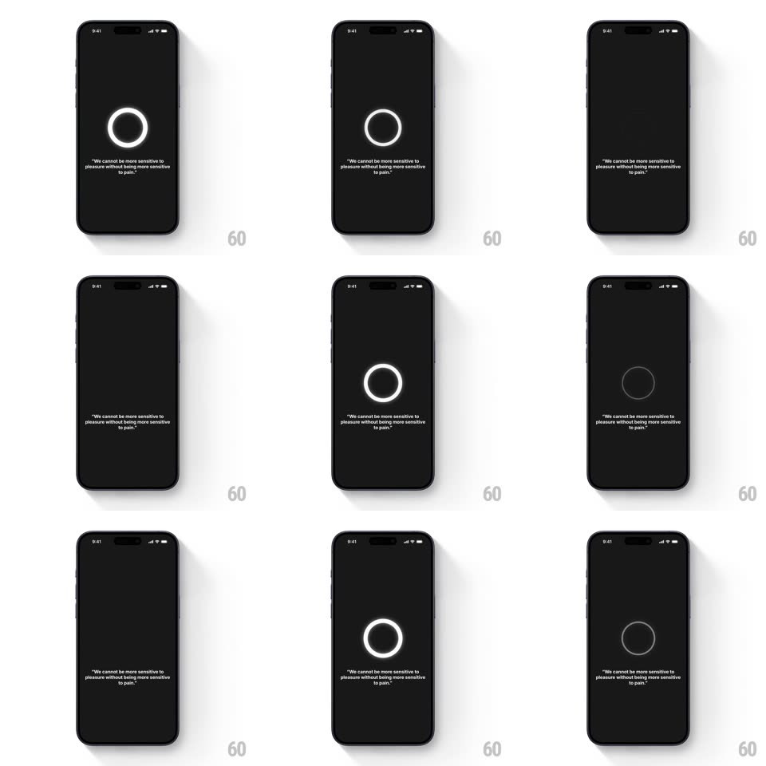

Media
Frame-by-frame

Rebuild this animation 1:1: Mirror's loading breath - a single thin circle slowly fades in and out on a black screen over a quiet quote, nothing else moving.

Rebuild this animation 1:1: Mirror's loading breath - a single thin circle slowly fades in and out on a black screen over a quiet quote, nothing else moving. ## Integration Integration: stack-agnostic spec - springs given as stiffness/damping, timed motions as duration + curve; map every value to your framework and animation library of choice. ## Scene A pure black screen. Centered: a thin white ring (no fill, ~2px stroke). Below it, small centered gray quote text: "We cannot be more sensitive to pleasure without being more sensitive to pain." Nothing else - no logo, no progress label, no spinner. ## Motion spec Pattern: slow breathing ring - opacity and scale pulse as a loading state. - The ring breathes on a 2.4s loop: opacity 0.15 -> 1 -> 0.15 with ease-in-out, and a barely-there scale swell (1 -> 1.06 -> 1) synced to the opacity peak. - The stroke stays constant - the pulse is light, not weight. - The quote holds still at a low-contrast gray - it does not breathe with the ring. - One ring only - no ripples, no rotating arcs, no percentage. ## Calibration - Slow is the point: the full breath cycle reads as calm waiting, never as a progress bar. - At the opacity floor the ring must remain just visible - it haunts the screen rather than vanishing. ## Reduced motion Hold the ring at 60% opacity, static. ## Don't miss - No spinner arc - this is a full closed ring, lit and dimmed, not a progress indicator. - The quote is part of the loading state - it holds the eye while the ring breathes.